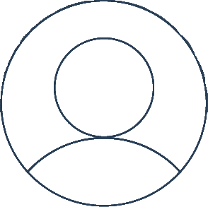

<!--
  Generated template for the MessagePage page.

  See http://ionicframework.com/docs/components/#navigation for more info on
  Ionic pages and navigation.
-->
<ion-header>
  <div id="nav">
    
    <p> James </p>
    <p style="height: 1px; width: 10px;"></p>
  </div>
</ion-header>


<ion-content padding>
  <div style="height: 100%;">
    <div style="overflow: scroll; height: 90%">
      <div *ngFor="let data of messages">
           <ion-item *ngIf="data.isMentor" no-lines>
            <div class="chat-text" item-left>
              <div style="margin-left: 15%;"><p>James: </p> </div>
              <div style="display: flex">
                
                <p class="other-sent message">{{data.message}}</p>
              </div>
            </div>
          </ion-item>
          <ion-item *ngIf="!data.isMentor" no-lines>
            <div class="chat-text-user">
              <p class="user-sent message">{{data.message}}</p>
            </div>
          </ion-item>
         </div>
      </div>

       <div id="input">
        <div style="display: flex">
            <input style="font-size:18px;border-radius:15px;height:100%; width: 80%; border-style: groove;" type="text" [(ngModel)]="messageData">
            <ion-icon style="padding-top: 0.4em; width: 32px; height: 100%; margin-left: 13px;" item-right name="arrow-round-up" (click)="addMessage()">
            </ion-icon>
        </div>
    </div>
  </div>
</ion-content>
